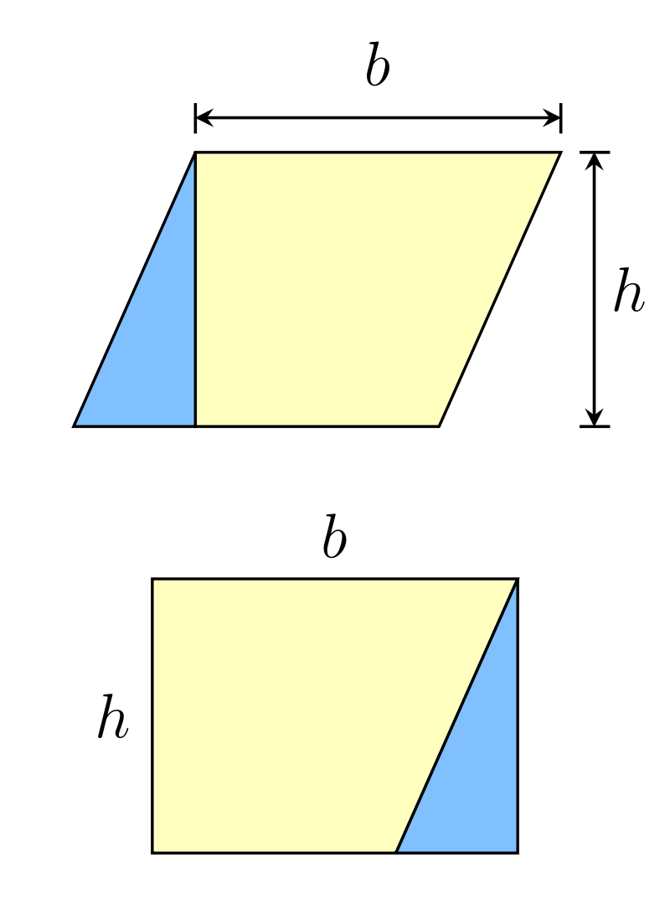

Interactive Visual Proof of the Pythagorean Theorem
As you probably learnt in school, the Pythagorean theorem states that given a right-angled triangle, the hypothenuse squared is equal to the sum of the two other sides squared. In other words, a2 + b2 = c2.
There are a variety of ways of proving this theorem, one of which is demonstrated in the app above. The app probably requires some further explanation, so here goes:
The crucial idea one needs to keep in mind is that the area of a parallelogram with height h perpendicular to one of its sides b, is equal to a rectangle with sides h and b, as demonstrated in the image below:
In the app above, each of the two smaller squares is turned into a parallelogram by moving one of its sides. The area of this parallelogram is equal to the original square, since the distance between the two parallel sides remains the same.
Next, each of the newly created parallelograms is turned into a rectangle. The area of this new rectangle is likewise equal to that of the parallogram, by virtue of the same principle shown in the picture.
When both transformations have been made, it is evident that the combination of the two new rectangles has the same size as the large square, formed by the hypothenuse.